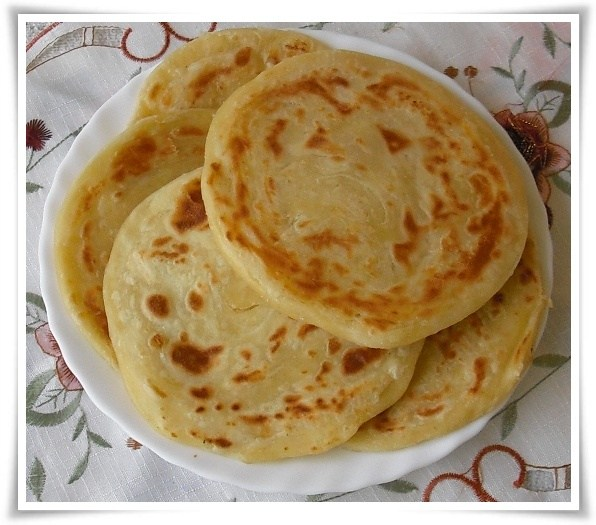
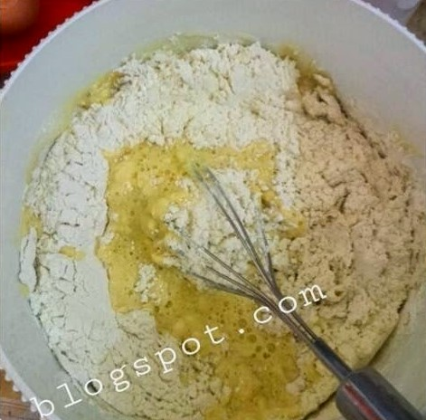
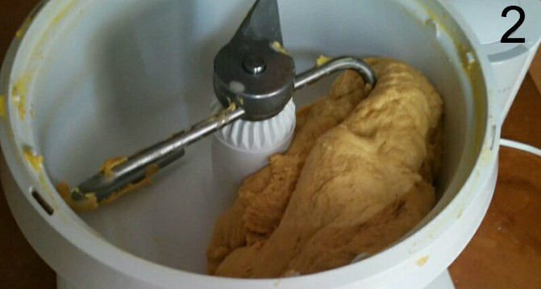
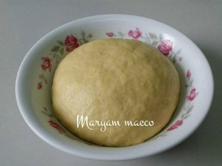

Resep Kue Maryam
Bahan-bahan :

- 250 gr tepung terigu
- 1 butir telur
- 3 sdm margarin, lelehkan
- 100 ml air hangat
- 2 sdm susu bubuk (optional)
- 1/2 sdt garam
- margarin leleh untuk olesan
- minyak untuk merendam
Langkah-langkah
- Campur semua bahan roti jadi satu

- Uleni sampai kalis

- Kalisnya adonan canai tidak sekalis adonan roti ya,
kira2 seperti ini sudah cukup

Berikut Video Cara Membuat Roti Maryam